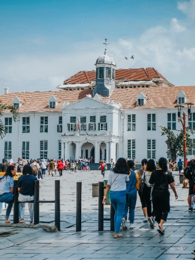

Headline
Jonatan Christie dan Gregoria Mariska Gugur di Babak Pertama Japan Open 2025, Ngaku Bermain Buruk
Dua pebulu tangkis andalan Indonesia, Jonatan Christie dan Gregoria Mariska Tunjung harus gugur di babak pertama Japan Open 2025.
📅15 July 2025
Baca Selengkapnya↗
1 dari 5
Berita Terpopuler
1

China Siap Kenalkan Teknologi Mengemudi Satu Pedal pada Mobil Listrik
Otomotif•15 Jul 2025
2

Razia Nasional Dimulai: 7 Dosa Pengendara yang Diincar Polisi, Denda hingga Rp1 Juta
Otomotif•15 Jul 2025
3

Daftar Harga Mobil Murah yang Tak Lagi Murah: Rincian Lengkap LCGC Juli 2025
Otomotif•15 Jul 2025
Rekomendasi Untuk Anda


Showing 1 to 8 of 30 results
Petualangan Edukatif bersama Malang Mbois City Tour!
Petualangan Edukatif bersama Malang Mbois City Tour!
Musium Brawijaya

Kayoetangan
Kebun Binatang